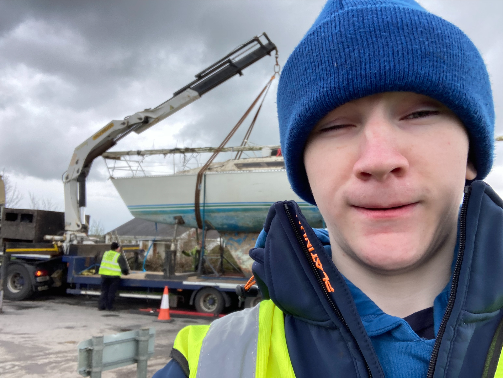
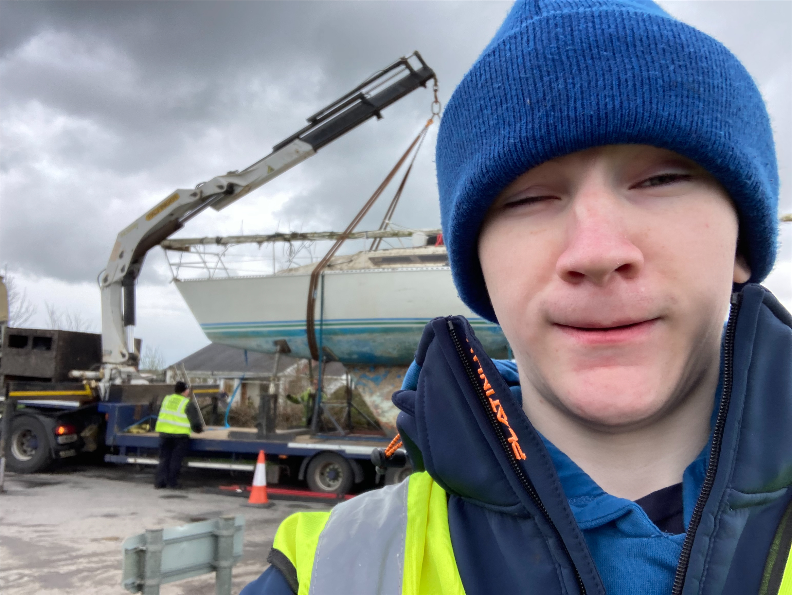

MEEE
My name is Ethan Tidbury, and here is a page dedicated to me!
My name is Ethan Tidbury, and here is a page dedicated to me!
In recent years, I have found myself attracted to a vast array of fields.
From stories like One Piece, cosplaying various characters, one of my own prize-winning designs, and a little embroidery business that has started to grow over the past three years!
My cosplay journey all started from an interest in the world of One Piece, dressing up as the main antagonist for my first convention.
And from the few compliments I received regarding the cosplay, I then started to grow it into something "more".
The introduction of a CRT TV was definitely not my first thought, and using it as a helmet was certainly the last thought. Nonetheless, popularity shot up, which I took as an opportunity
to then push my little business.
 

Over the last three years, I have been slowly developing my little embroidery business.
It started off as me making an embroidery for my work buddy since she helped me get involved in this career. From there, I kept making different embroideries just for fun. Soon after, people started to recognize my skill.
Then slowly people would come to me and commission some work from me. After that, the rest is history. I just kept adding to my stockpile, slowly making more patches and developing the business side of things with an ever-growing Instagram page and, as of late, business cards!

Where can I go from here? Up seems the likely direction! I'm not entirely sure where my interests will take me. Will I still have the same ones? Will they grow or fall?
What happens to me over the next few years will be for me to find out in due time. Until then, I'm gonna keep going how I have been—endlessly cheerful and perpetually dopey until time itself has had enough of me.